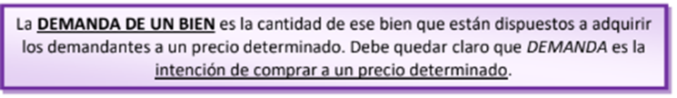

LA DEMANDA DE UN BIEN
Entras en una tienda dispuesto a comprarte unas zapatillas que has visto la semana anterior. Cuestan 40 euros, así que la idea es probártelas y comprarlas sin mirar más en la tienda. Sin embargo, cuando llegas a la altura de las zapatillas, ves que las Converse están rebajadas de precio, normalmente cuestan unos 60 euros y la etiqueta dice que se rebajan un 25%, por lo que costarían 45. Merece la pena el cambio, piensas. No lo dudas ni un segundo, te vas a por las Converse, las agarras y vas al mostrador a pagar. Allí la chica que atiende te pregunta que si estás al tanto de la superoferta en Converse que hay en ese momento. Le dices que sí, que has visto la rebaja del 25%. Sin embargo, la chica dice que esa oferta es antigua, y que la actual es de una rebaja del 50%, como si fuera un 2x1.
Sin dudar te vas de nuevo a la zona de las Converse y coges otro par. No todos los días se pueden comprar esas zapatillas a 30 euros. Cuando de nuevo llegas a pagar, la chica usa el lector de código de barras sobre los productos, y se empieza a reír. Resulta que la tienda está tratando de deshacerse de todas las Converse. El descuento real es de casi el 70%, y cada par de zapatillas cuesta solo 20 euros.
Te puedes imaginar lo que pasa ahora, ya te me habías hecho la idea de comprar 2 zapatillas por 30 y pagar 60 euros, pero ahora puedes comprar 3 por 20 euros y seguir pagando 60. ¿Qué ha pasado? ¿Eres un consumista empedernido? Puede que sí pero, además, ha entrado en juego la ley de la demanda.
¿Qué es la demanda?
En principio, mucha gente contestaría a esta pregunta diciendo que es la cantidad de personas que compran un producto. Así, la demanda de café sería la cantidad de cafés que las personas quieren tomar en un momento determinado. Aunque esas personas no andan desencaminadas, la respuesta no es del todo exacta.
¿Cuántas tazas de café quieren comprar los españoles en un año? En principio, podríamos pensar que, si multiplicamos los cafés que se toman en un día en España y por 365, eso sería la demanda del año. El problema es que los cafés que nos tomemos dependen del precio del café. Si el precio sube, los españoles querremos beber menos café, algunos probablemente cambiarán a té o incluso a una Coca-Cola (que sea sin azúcar, por favor). De la misma manera, si el café baja de precio, habrá algunas personas que tomen más.
Por tanto, para responder a la pregunta ¿Cuántas tazas de café quieren comprar los españoles en un año?, necesitamos saber el precio del café.
